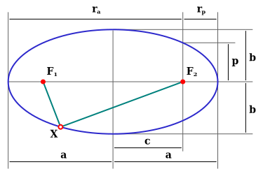

Основное назначение этой страницы — понять, какие вещи не стоит забыть повторить перед туром олимпиады. На полноту и точность она не претендует, а скорее является отправной точкой. За остальным лучше отправиться в книжки или в записи лекций
- Радиан
- величина угла, стягивающего дугу, равную радиусу, 1 рад = \(180^\circ/\pi \approx 57^\circ \approx 3438' \approx {\color{red}206265''}\).
- Астрономическая единица
- среднее расстояние от Земли до Солнца, около \(\color{red}150 \times 10^6\) км.
- Параллакс (\(\varpi\))
- угол, под которым виден радиус земной орбиты.
- Парсек
- расстояние, соответствующее параллаксу в \(1''\), то есть \(\color{red}206265\) астрономических единиц или \(3.26\) светового года
- Наклон небесного экватора к эклиптике
- \(\varepsilon = \color{red}23^\circ 27'\).
- Высота полюса мира над горизонтом
- \(h = \varphi\) (широта).
- Кульминации светил
- Экваториальный радиус Земли
- примерно \(\color{red}6400\) км
- Угловой размер Луны (диаметр)
- около \(\color{red}30'\), но изменяется, поскольку эксцентриситет лунной орбиты \(\neq 0\).
- Расстояния Земля-Луна
- примерно \(\color{red}400\,000\) км — большая полуось равна \(384\,400\) км
- Радиус Луны
- можно не запоминать, а прикинуть, зная расстояния и угловой размер. Получается похоже на правду — около \(3/11\) от земного, т.е. \(\approx 1740\) км.
- Период обращения Луны
- сидерический (истинный): \(\color{red}27\) суток
- синодический (смены фаз): \(\color{red}29\) суток
- Масса Земли
- около \(\color{red}6\times 10^{24}\) кг.
- Масса Солнца
- примерно \(\color{red}2\times 10^{30}\) кг.
- Средняя скорость движения Земли по орбите
- около \(\color{red}30\) км/c.
Для примерного нахождения полуосей планет можно воспользоваться правилом Тициуса-Боде:
\[ a = {\color{red}0.4 + 0.3 \cdot 2^{i}} \text{(а.е)}, \; i = -\infty, 0, 1, \dotsc \]\(i=3\) — пояс астероидов, а Нептун выпадает из этого правила!
- Закон Погсона
- \(5^m = \) увеличению освещённости в 100 раз!
- Звёздная величина Солнца
- видимая (в небе): \(\color{red}-27^m\), абсолютная (с расстояния 10 пк): \(\color{red}5^m\).
Задача о гравитационном взаимодействии \(N\) тел. Решается (аналитически) только для \(N < 3\).
Для двух тел работают законы Кеплера (перейдём в систему отсчёта одного из них и предположим что второго сильно меньше по массе):
-
Движущееся тело будет совершать движение по коническому сечению (эллипс, парабола, гипербола).
Форма определяется эксцентриситетом:
\[ c = a\,e, \quad b = \sqrt{a^2 - c^2}, \quad p = a\, (1-e^2) \]Автор: Melikamp - собственная работа, CC BY-SA 3.0,
https://commons.wikimedia.org/w/index.php?curid=25189337 -
За равные промежутки времени его радиус-вектор будет заметать равные площади.

- Куб большой полуоси к квадрату периода — постоянная величина для любого относительного положения тел. \[ \frac{a^3}{T^2} = \frac{G\, M}{4\pi^2} \]
Закон сохранения энергии:
\[ \frac{v^2}{2} - \frac{GM}{r} = h = \text{const} \qquad\quad \begin{aligned} h &= -\tfrac{GM}{2a} < 0 & a &> 0 &&\text{эллипс} \\ h &= -\tfrac{GM}{2a} =0 & a &= \infty && \text{парабола}\\ h &= -\tfrac{GM}{2a} > 0 & a &< 0 &&\text{гипербола} \end{aligned} \]Скорости:
\[ \begin{aligned} v &= \sqrt{GM\, \tfrac{1}{a}} &&\text{круговая} \\ v &= \sqrt{GM\,\left(\tfrac{2}{r} - \tfrac{1}{a}\right) } &&\text{на эллипсе} \\ v &= \sqrt{2\,GM \, \tfrac{1}{r}} &&\text{параболическая} \\ \end{aligned} \]У горизонта \(\approx 30'\), а на малых зенитных углах \(\rho \approx 1'\, \mathop{\rm tg} z\).